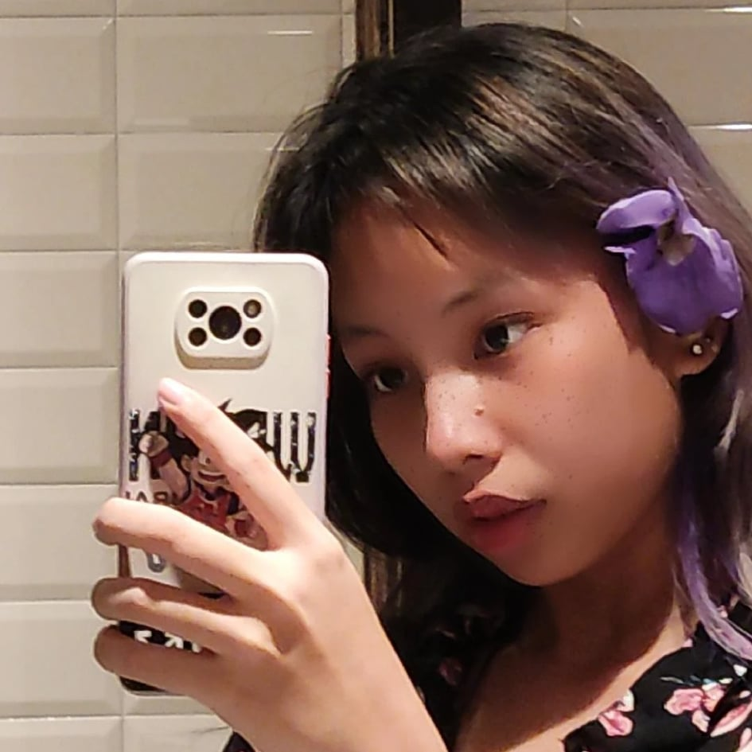
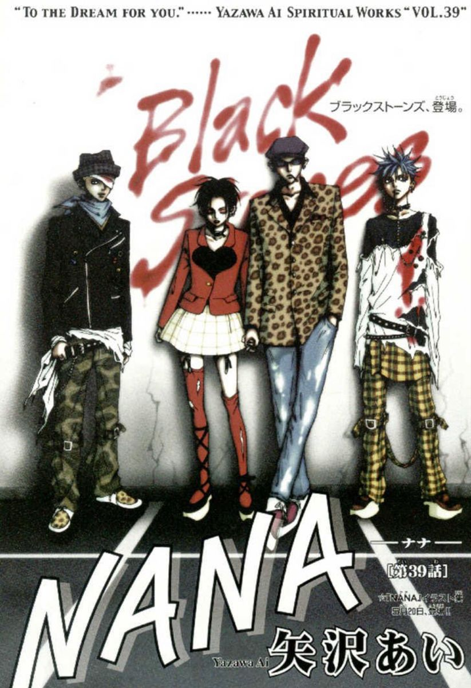
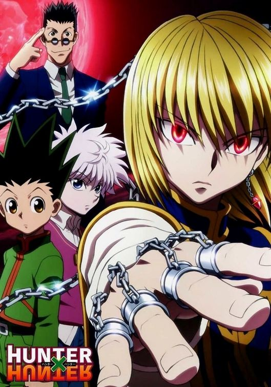
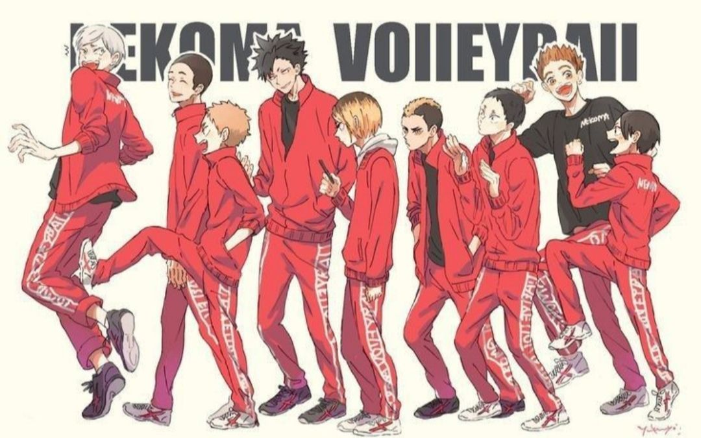

|  | Sacha Keilen Llait |
Name: Sacha Keilen L. Llait
Age: 16
Date of birth: August 30, 2005
Zodiac sign: Virgo
Grade and Section: 10 - St. Dominic
Email Address : sk.llait00@gmail.com
Hi! I am Sacha Keilen Llait and I have been studying in Sto.Nino Catholic School since the 5th grade and I am now currently in 10th grade. My journey in this school is like a roller coaster, there are ups and downs but I somehow managed to get through it and now I am about to move up to senior high school and take up the strand of HUMMS. I am not a perfect student that always gets high grades nor makes up for it with my attitude but I do try my very best to make my guardians proud. Some more information about me is that I like anime, although I never get to really watch it as often as before because of the lack of time, my love for the art has not faded one bit. A few of my favorites are Nana, HunterxHunter and Haikyuu. I am particularly in favor of the volleyball team of nekoma. Their setter really stood out to me and I am in awe of his strategies and techniques that drove the team to winning. I do hope that you enjoyed my brief introduction about myself and I hope you enjoy this website as much as I enjoyed making it.
|  |  |  |